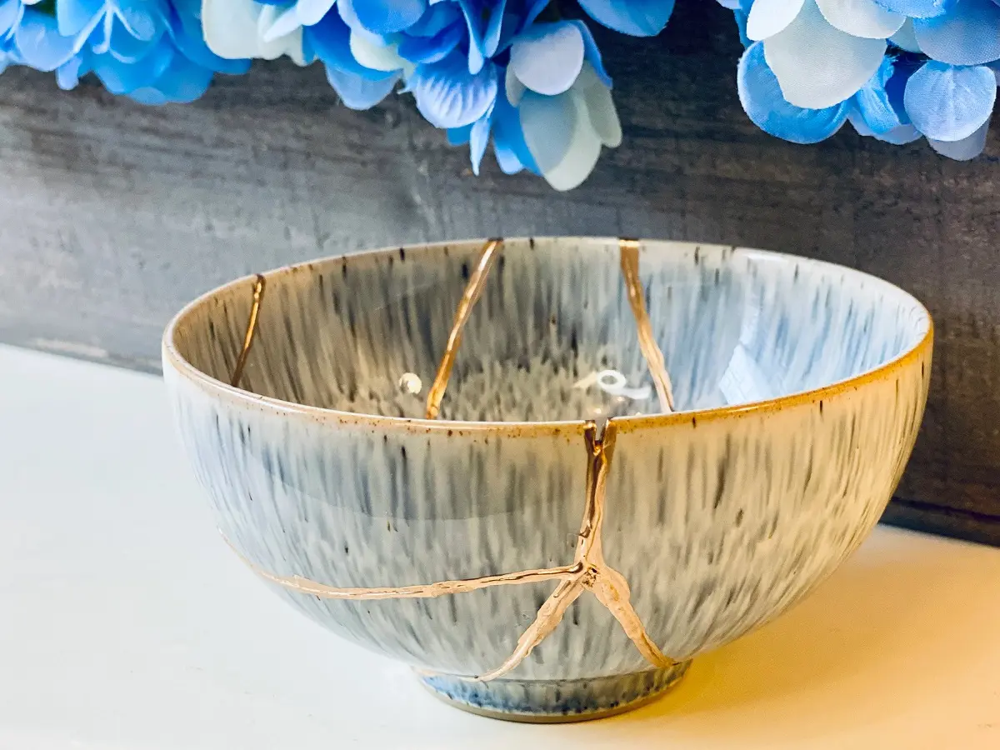
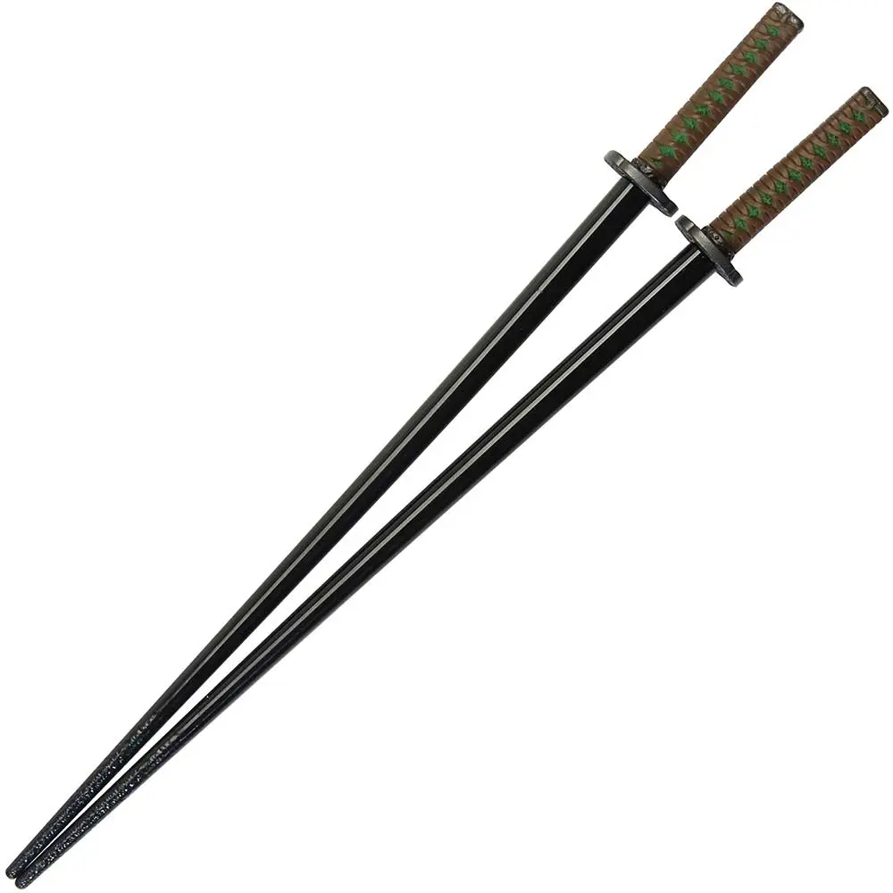
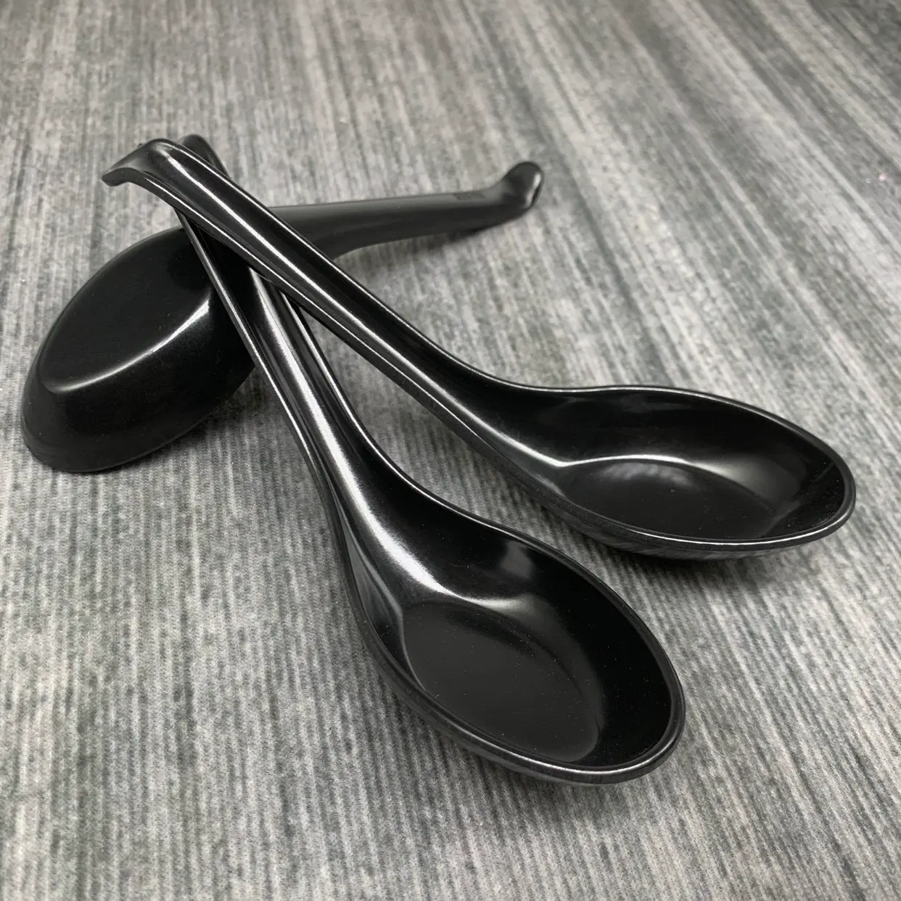

The Art of Slurping: The 2026 Ramen Set Guide

In 2026, enjoying a bowl of ramen is no longer just a meal; it is a "ritual protocol" for every true Otaku. From the thick steam of Tonkotsu broth to the precise placement of Narutomaki, every detail demands tools that blend engineering with art. In this comprehensive guide, we venture beyond ordinary kitchens into the specialized world of Ramen. From selecting ceramic bowls with advanced heat-retention technology to titanium chopsticks and "Renge" spoons that guarantee the golden ratio of flavor, we teach you how to transform your dining table into a top-tier ramen shop in the heart of Tokyo.
Step 1: Laying the Foundation; Selecting the Professional Ramen Bowl (The Vessel Foundation)
It all begins here. In the professional world of ramen, a bowl is not just a container; it is the "nuclear reactor" that manages heat, aroma, and the structural arrangement of the noodles. An inadequate vessel can turn the world’s best broth cold and lifeless in minutes. In 2026, we seek materials that not only trap heat but also offer the depth required for the hidden layers of ramen—from black garlic oil to fresh scallions—to properly present themselves.
1. The Luxury Choice: Kintsugi Masterpiece Ceramic Set

“A fusion of authentic Japanese tradition and modern technology.” If you are looking for a set that is a work of art in itself, handmade brands inspired by the art of Kintsugi (the craft of repairing with gold) are the top tier. These bowls are crafted from heavy, high-density ceramic that retains heat 30% longer than standard bowls, ensuring your last spoonful of broth stays piping hot.
- • Key Feature: Edges specifically designed for precise chopstick placement and a scratch-resistant glaze that is fully resistant to the acidity of spicy broths.
- • Price: $120 to $150 (per complete set)
2. The Budget Choice: World Market Reactive Glaze Set
“Professional aesthetics at a friendly price.” For those who want multiple sets for their anime-themed dinner parties, brands like World Market produce "Reactive Glaze" sets that develop unique textures in the kiln. These bowls are lighter in weight but remain fully microwave and dishwasher safe.
- • Key Feature: Extra depth to prevent broth splashing and a highly affordable price point.
- • Price: $15 to $25
3. The Popular Choice: APEX Anime-Inspired Naruto Ichiraku Set
“Pure nostalgia for true fans.” The most popular sets of 2026 are models modeled exactly after the famous ramen shops seen in anime. These sets typically include a large ceramic bowl with classic red and white patterns, a wooden spoon (Renge), and a pair of high-quality chopsticks.
- • Key Feature: Iconic design that transports you straight to the Hidden Leaf Village, featuring a "Jumbo" size for high-volume ramen portions.
- • Price: $35 to $50
Step 2: The Otaku’s Magic Wand; Professional Chopstick Mastery
If the ramen bowl is the "battlefield," then your chopsticks are your swords. In 2026, the era of disposable wooden chopsticks that cause noodles to slip and slide is over. A professional Otaku seeks a tool that offers balance, friction, and, of course, style.
Here, we explore three tiers of chopstick selection to complete your ramen-dining set:
1. The Luxury Choice: Ti-Mag Titanium Professional Series
“Aerospace engineering in the palm of your hand.” These chopsticks are crafted from Grade 5 Titanium. Not only is their weight incredibly low (approximately 15g), but thanks to titanium’s antibacterial properties, they add zero metallic aftertaste to your meal. In the 2026 models, the ends of these chopsticks feature neodymium magnets, ensuring the pairs always stick together and never get lost in your drawer.
- • Key Feature: Laser-etched tips for gripping the slickest noodles and eternal heat resistance.
- • Price: $60 to $90
2. The Budget Choice: Hiware Fiberglass Non-Slip Set
“Flawless performance for the price of a pizza.” Fiberglass chopsticks (a blend of polymer and glass) are the new standard in Tokyo’s high-end restaurants. Unlike wood, they don't absorb odors, and unlike metal, they aren't slippery. These sets usually come in packs of 5 to 10 pairs, making them perfect for anime-themed dinner parties.
- • Key Feature: Heat resistance up to 180°C and a square-top design that prevents them from rolling off the table.
- • Price: $10 to $18 (5-pair pack)
3. The Popular Choice: Official Anime Licensed (Katana Style) Series

“When Samurais eat ramen.” The most popular trend of 2026 features chopsticks with handles designed to look exactly like the Tsuka (hilt) of katanas belonging to famous characters like Zoro (One Piece) or Rengoku (Demon Slayer). These models are a hybrid of high-quality resin and reinforced bamboo tips.
- • Key Feature: Stunning detail in the handle design and an included "Chopstick Rest" (Hashioki) shaped like a sword scabbard.
- • Price: $25 to $40
Step 3: The Art of Savoring; The Renge Spoon Mastery
If you think a standard metal spoon is sufficient for ramen, I must tell you that in 2026, this is considered a "strategic error" in the Otaku lifestyle. The ramen spoon—known in Japan as Renge (meaning "lotus petal")—is specifically engineered to hold a precise volume of broth and noodles simultaneously, ensuring the "Golden Ratio" of flavor in every single bite.
1. The Luxury Choice: Hand-Carved Japanese Teak Wood Renge
“A touch of nature in every sip of broth.” These spoons are manually carved from Teak or Ebony. Unlike metal or ceramic, wood does not conduct heat, meaning the edge of the spoon will never scald your lips. In the luxury 2026 models, the handle features a "hidden hook" that prevents the spoon from sliding and drowning in the depths of the ramen bowl.
- • Key Feature: A velvety wood texture that evokes the authenticity of Japan’s mountainside restaurants.
- • Price: $25 to $40 (per unit)
2. The Budget Choice: Melamine Commercial Grade Spoons

“Endless durability in the heart of the kitchen.” This is the exact spoon you’ll see in the busiest ramen shops of Tokyo. Grade A5 Melamine is both lightweight and virtually unbreakable. These spoons typically come in a classic dual-tone (red interior and black exterior), creating a beautiful visual contrast with the ramen broth.
- • Key Feature: High-temperature resistance and 100% dishwasher safe.
- • Price: $8 to $12 (6-pack)
3. The Popular Choice: Ceramic "Maneki-Neko" / Anime Theme Spoons
“A smile on the edge of your spoon.” The most popular choice for collectors in 2026 is ceramic spoons featuring anime prints or Japanese symbols like the Maneki-Neko (Lucky Cat). Due to their ceramic material, these spoons are heavier and offer a satisfying sense of stability in the hand.
- • Key Feature: The base of the spoon is designed to align perfectly with the curvature of ceramic ramen bowls.
- • Price: $15 to $25 (2-pack)